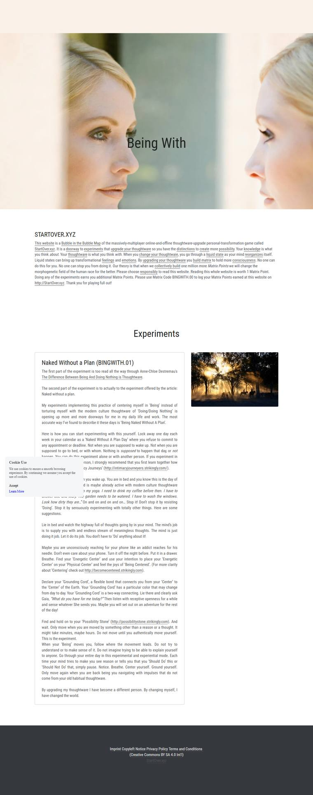

Being With on Strikingly
The first part of the experiment is too read all the way through Anne-Chloe Destremau's The Difference Between Being And Doing Nothing is Thoughtware.
The second part of the experiment is to actually to the experiment offered by the article: Naked without a plan.
My experiments implementing this practice of centering myself in ‘Being’ instead of torturing myself with the modern culture thoughtware of ‘Doing/Doing Nothing’ is opening up more and more doorways for me in my daily life and work. The most accurate way I’ve found to describe it these days is ‘Being Naked Without A Plan’.
Here is how you can start experimenting with this yourself. Lock away one day each week in your calendar as a ‘Naked Without A Plan Day’ where you refuse to commit to any appointment or deadline. Not when you are supposed to wake up. Not when you are supposed to go to bed, or with whom. Nothing is supposed to happen that day, or not happen. You can do this experiment alone or with another person. If you experiment in the company of another person, I strongly recommend that you first learn together how to ‘Negotiate 5 Body Intimacy Journeys’ (http://intimacyjourneyers.strikingly.com/).
The experiment starts when you wake up. You are in bed and you know this is the day of your experiment. Your mind is maybe already active with modern culture thoughtware thoughts like, “I have to do my yoga. I need to drink my coffee before then. I have to answer Joe and Mary. The garden needs to be watered. I have to wash the windows. Look how dirty they are…” On and on and on and on… Stop it! Don’t stop it by resisting ‘Doing’. Stop it by sensuously experimenting with totally other things. Here are some suggestions.
Lie in bed and watch the highway full of thoughts going by in your mind. The mind’s job is to supply you with and endless stream of meaningless thoughts. The mind is just doing it job. Let it do its job. You don’t have to ‘Do’ anything about it!
Maybe you are unconsciously reaching for your phone like an addict reaches for his needle. Don’t even care about your phone. Turn it off the night before. Put it in a drawer. Breathe. Find your ‘Energetic Center’ and use your intention to place your ‘Energetic Center’ on your ‘Physical Center’ and feel the joys of ‘Being Centered’. (For more clarity about ‘Centering’ check out http://becomecentered.strikingly.com).
Declare your ‘Grounding Cord’, a flexible bond that connects you from your ‘Center’ to the ‘Center’ of the Earth. Your ‘Grounding Cord’ has a particular color that may change from day to day. Your ‘Grounding Cord’ is a two-way connecting. Lie there and clearly ask Gaia, “What do you have for me today?” Then listen with receptive openness for a while and sense whatever She sends you. Maybe you will set out on an adventure for the rest of the day!
Find and hold on to your ‘Possibility Stone’ (http://possibilitystone.strikingly.com). And wait. Only move when you are moved by something other than a reason or a thought. It might take minutes, maybe hours. Do not move until you authentically move yourself. This is the experiment.
When your ‘Being’ moves you, follow where the movement leads. Do not try to understand or to make sense of it. Do not imagine trying to be able to explain yourself to anyone. Go through your entire day in this experimental and experiential mode. Each time your mind tries to make you see reason or tells you that you ‘Should Do’ this or ‘Should Not Do’ that, simply pause. Notice. Breathe. Center yourself. Ground yourself. Only move again when you are back being you navigating with impulses that do not come from your old habitual thoughtware.
By upgrading my thoughtware I have become a different person. By changing myself, I have changed the world.